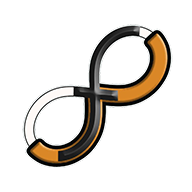
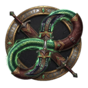

Pick an app below. Winfinity Fitness Tracker's 9 recorded walkthroughs are ready now — the rest are on the way.

9 recorded walkthroughs, start to finish
Web dashboard, community & leaderboard

The Fitness RPG layer
Owner & coach tools app